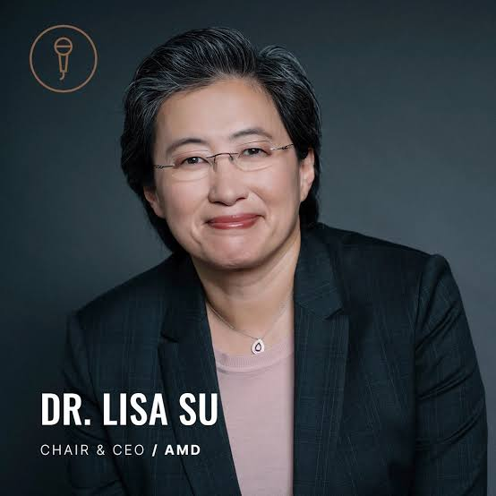

VOLVER
DRA. LISA SU: LIDER DE AMD (Advanced Micro Devices)
UNA FIGURA CLAVE EN LA INFORMÁTICA

La Dra. Lisa Su es una ingeniera eléctrica y ejecutiva empresarial reconocida por su papel
como CEO de AMD (Advanced Micro Devices). Nació en Taiwán y creció en Estados Unidos,
donde desarrolló su pasión por la tecnología desde muy joven. Estudió en el
Instituto Tecnológico de Massachusetts (MIT), donde obtuvo su doctorado en ingeniería eléctrica.
Antes de unirse a AMD, trabajó en importantes empresas como IBM y Freescale,
adquiriendo una amplia experiencia en el desarrollo de semiconductores.
Desde que asumió el cargo de CEO en 2014, Lisa Su transformó AMD, llevándola de una situación financiera difícil
a convertirse en una de las compañías más competitivas en el mercado de procesadores. Bajo su liderazgo,
AMD ha lanzado productos innovadores que compiten directamente con otras grandes empresas del sector.
Su visión estratégica y capacidad de liderazgo la han convertido en una de las mujeres más influyentes
en la tecnología a nivel mundial.